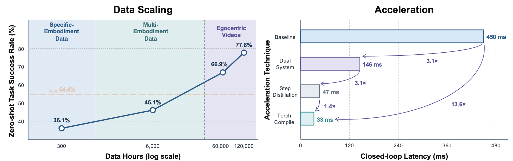
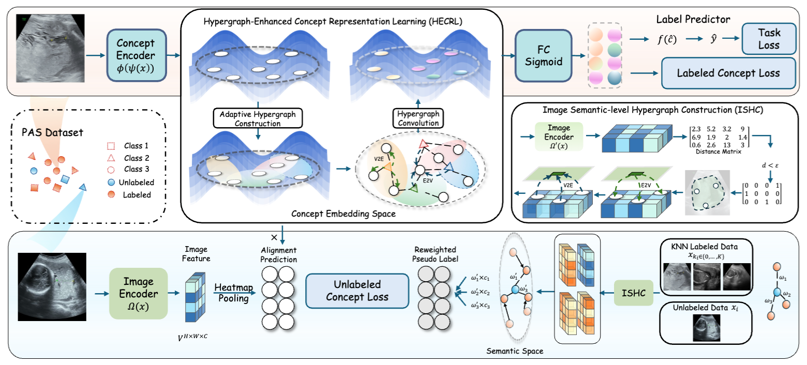
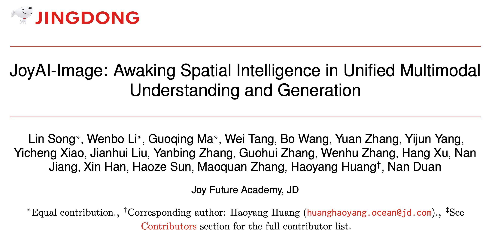
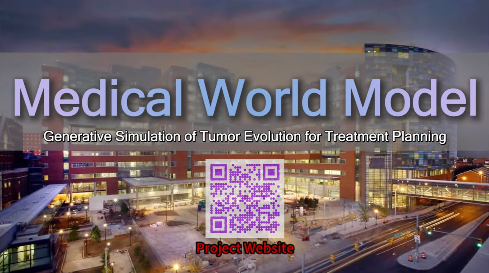
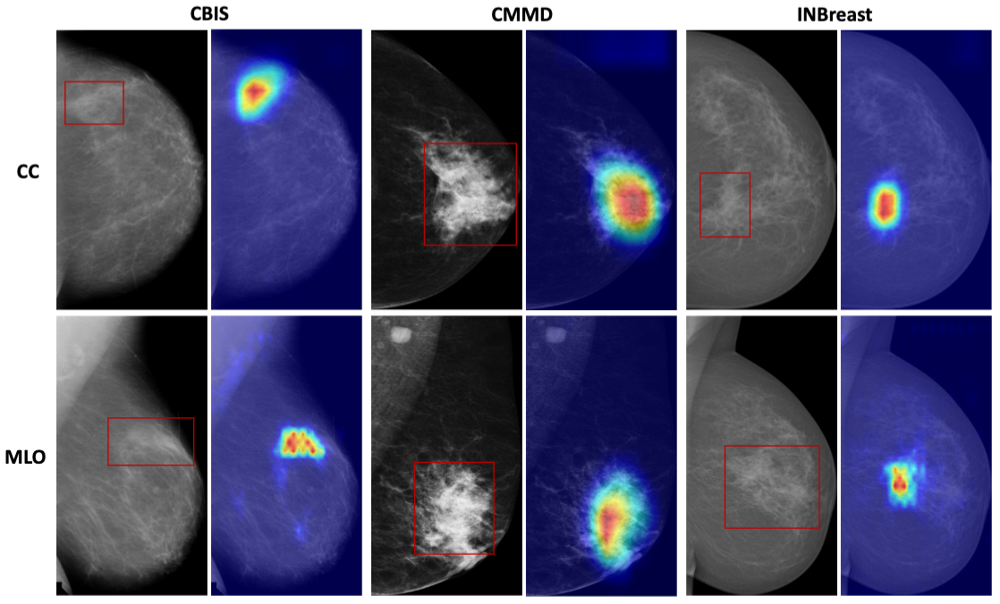

Ph.D. Candidate
Hong Kong University of Science and Technology (Guangzhou)
I am a fourth-year Ph.D. candidate at the Hong Kong University of Science and Technology (Guangzhou) supervised by Prof. Lei Zhu and Dr. Huazhu Fu. I obtained my Bachelor degree with honors in Artificial Intelligence at School of Computer Science and Technology, Shandong University in 2022. I've spent great time at Hong Kong University, University of Cambridge, Johns Hopkins University.
My research interests mainly lie in Unified World Modeling and AI for Healthcare.
Feel free to reach out to me if you are interested in collaboration.





Conference:
Journal: